MM5412 小组项目研究报告
深入探索社交媒体使用习惯与个人生产力之间的关系
本项目旨在通过数据分析揭示社交媒体使用习惯如何影响个人生产力，构建机器学习模型预测生产力得分和成瘾程度，为个人时间管理和健康使用社交媒体提供科学依据。
涵盖9个关键变量的综合数据集
| 变量名 | 说明 | 类型 |
|---|---|---|
| age | 年龄 | 数值 |
| daily_screen_time | 每日屏幕使用时间 | 数值 |
| social_media_hours | 每日社交媒体时间 | 数值 |
| study_hours | 每日学习时间 | 数值 |
| sleep_hours | 每日睡眠时间 | 数值 |
| notifications_per_day | 每日通知数量 | 数值 |
| focus_score | 专注力得分 | 数值 |
| addiction_level | 成瘾程度 | 分类 |
| productivity_score | 生产力得分 | 数值 |
数据集基本特征概览
| 统计量 | 年龄 | 屏幕时间 | 社交媒体 | 学习时间 | 睡眠时间 | 通知数 | 专注力 | 生产力 |
|---|---|---|---|---|---|---|---|---|
| 均值 | 27.11 | 6.92h | 4.15h | 4.07h | 6.51h | 159.78 | 96.36 | 37.61 |
| 标准差 | 7.20 | 2.83h | 2.13h | 2.29h | 1.42h | 80.23 | 7.34 | 27.33 |
| 最小值 | 15 | 2.0h | 0.66h | 0.0h | 4.0h | 20 | 47.39 | 0.0 |
| 最大值 | 39 | 11.99h | 10.66h | 8.0h | 9.0h | 299 | 100.0 | 100.0 |
范围17-40岁，主要集中在青年群体
日均约6.92小时，呈近似正态分布
日均约6.51小时，接近推荐睡眠时长
各变量分布直方图分析
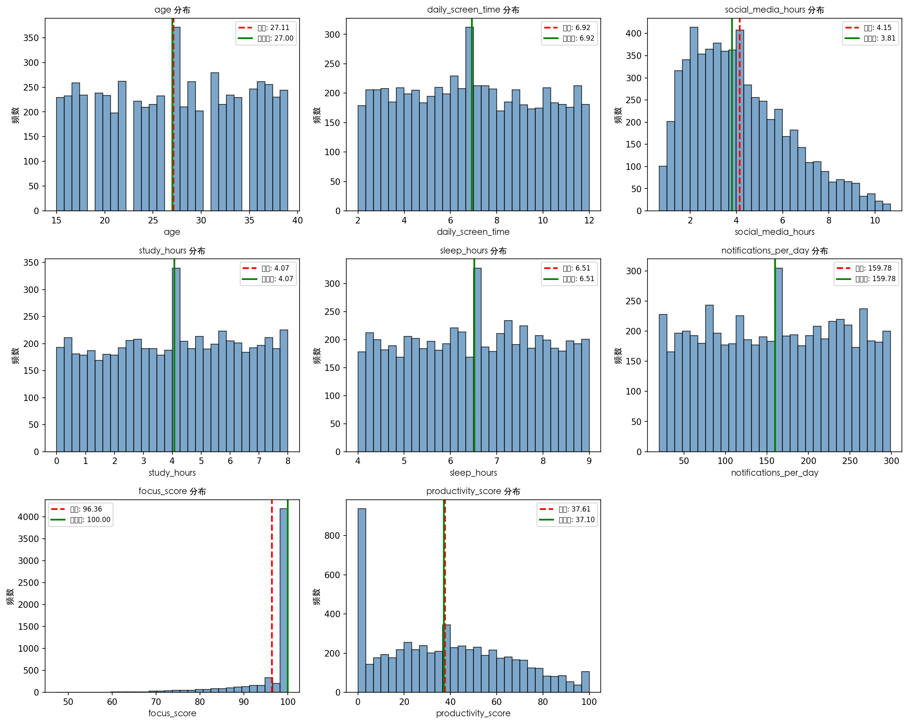
年龄分布呈右偏分布，集中在20-35岁区间；屏幕时间近似正态分布，峰值在6-8小时；专注力得分集中在80-100分高分区域，表明样本整体专注力水平较高。
社交媒体成瘾水平的样本分布
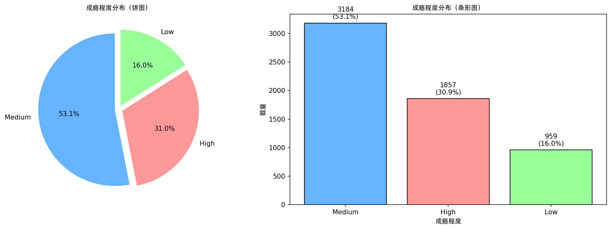
社交媒体使用时间少，生活工作平衡良好
样本主体，需关注向高度成瘾转化的风险
需要干预和引导，改变使用习惯
各变量之间的Pearson相关系数
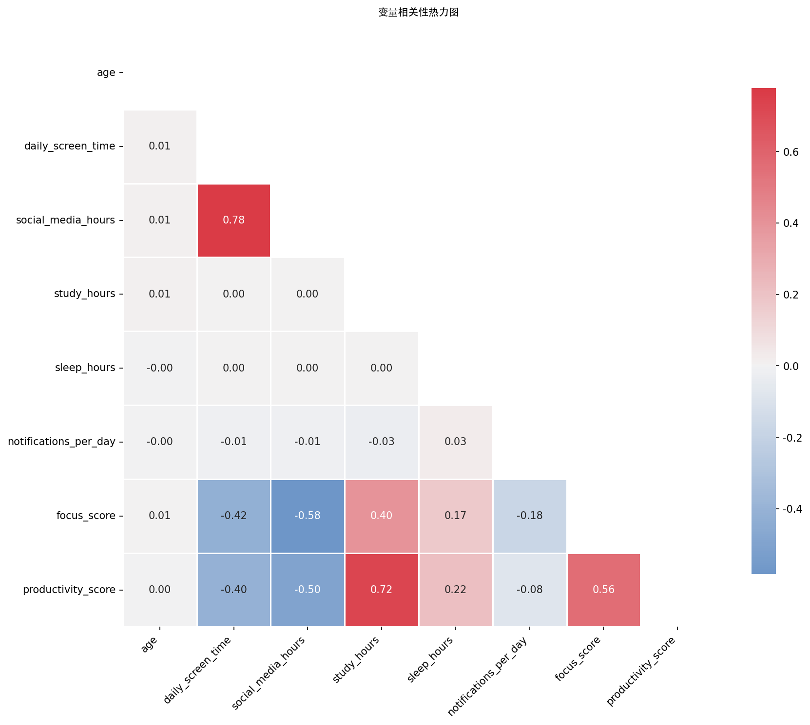
中等负相关，使用时间越多，生产力越低
强正相关，学习时间越长生产力越高
强正相关，专注力越高生产力越高
六大因素对生产力的影响可视化
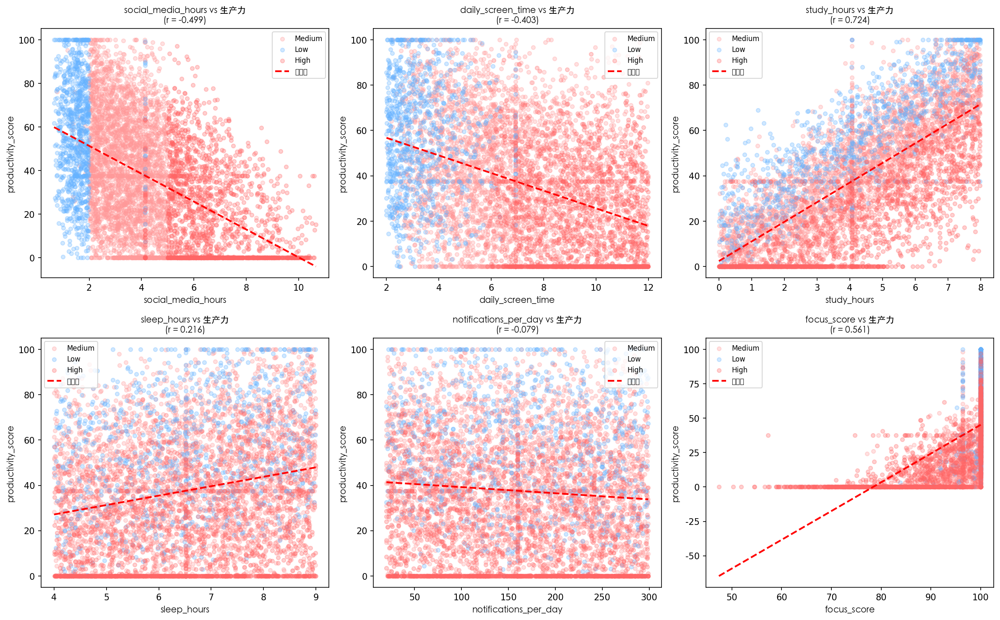
社交媒体使用是生产力的重要负面因素，高成瘾者（红色点）集中在低生产力区域；而学习时间和专注力是最重要的正向预测因子，呈明显的正向趋势。
各成瘾水平群体的关键指标差异
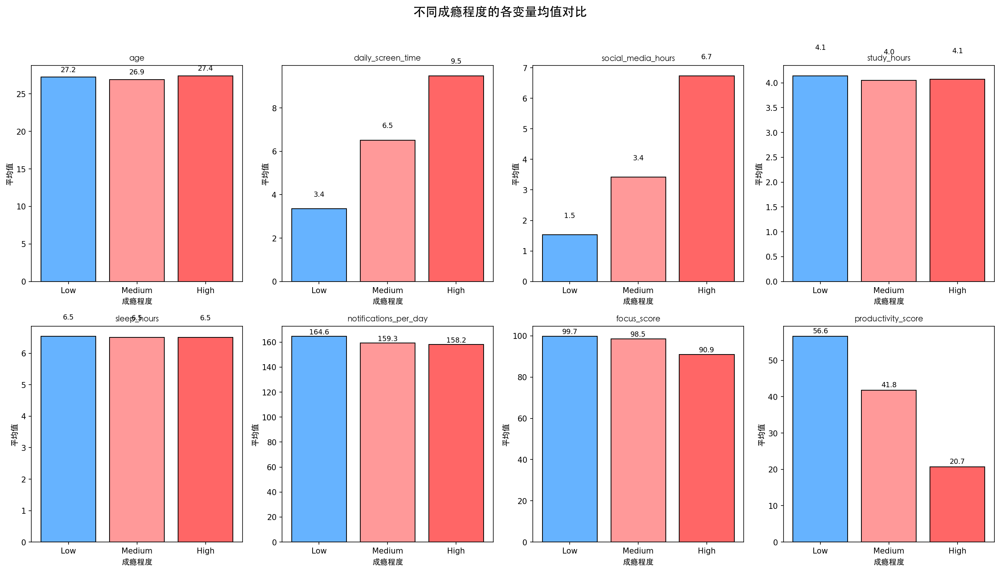
Low: 2.1h → Medium: 3.5h → High: 5.8h
成瘾越高，使用时间越多
Low: 68.5 → Medium: 43.8 → High: 12.6
高成瘾者生产力仅为低成瘾者18%
Low: 5.4h → Medium: 3.6h → High: 1.8h
成瘾越高，学习时间越少
社交媒体使用与生产力的分布特征
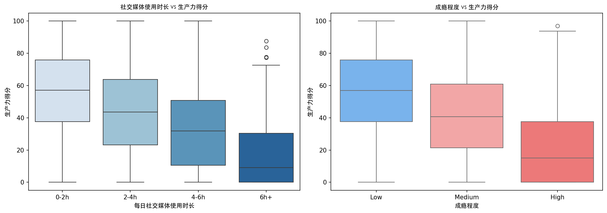
社交媒体使用超过4小时/天，生产力急剧下降。0-2小时组生产力中位数约65分，6小时以上组仅约10分。
High组成绩显著低于其他组，生产力中位数约5分。Low组中位数约75分，差异达15倍。
专注力得分分布和年龄与生产力的关系
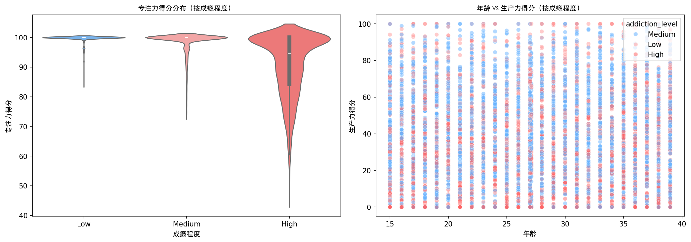
预测生产力得分的多种机器学习模型对比
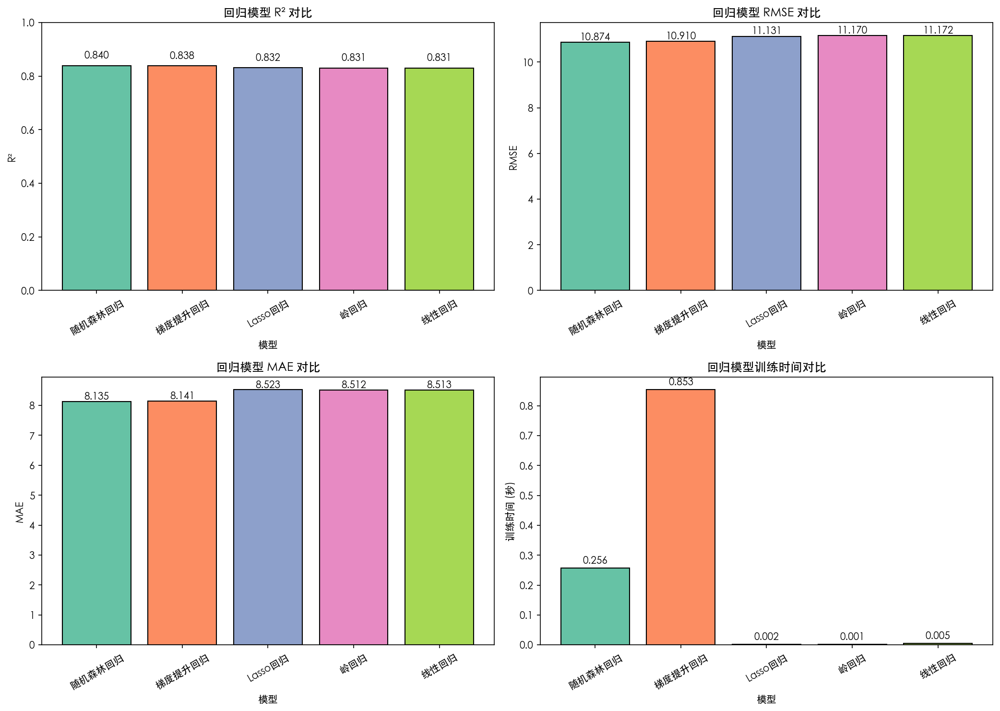
| 模型 | RMSE ↓ | MAE ↓ | R² ↑ | 交叉验证R² |
|---|---|---|---|---|
| 随机森林回归 | 10.87 | 8.13 | 0.840 | 0.841 ± 0.008 |
| 梯度提升回归 | 10.91 | 8.14 | 0.838 | 0.843 ± 0.005 |
| Lasso回归 | 11.13 | 8.52 | 0.832 | 0.838 ± 0.006 |
| 岭回归 | 11.17 | 8.51 | 0.831 | 0.839 ± 0.006 |
| 线性回归 | 11.17 | 8.51 | 0.831 | 0.839 ± 0.006 |
预测成瘾程度的多分类模型性能对比
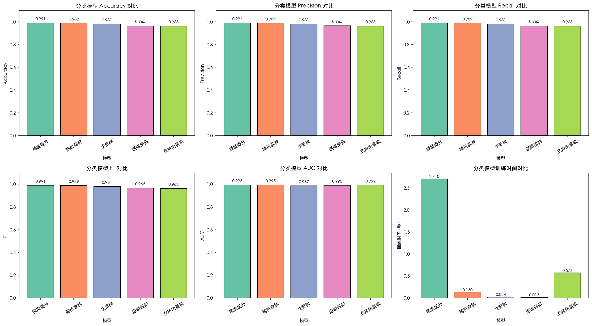
| 模型 | 准确率 | 精确率 | 召回率 | F1分数 | AUC |
|---|---|---|---|---|---|
| 梯度提升 | 99.08% | 99.10% | 99.08% | 99.09% | 0.995 |
| 随机森林 | 98.92% | 98.92% | 98.92% | 98.92% | 0.995 |
| 决策树 | 98.08% | 98.09% | 98.08% | 98.08% | 0.987 |
| 支持向量机 | 96.25% | 96.30% | 96.25% | 96.24% | 0.992 |
| 逻辑回归 | 96.50% | 96.51% | 96.50% | 96.50% | 0.990 |
梯度提升分类器的预测效果可视化
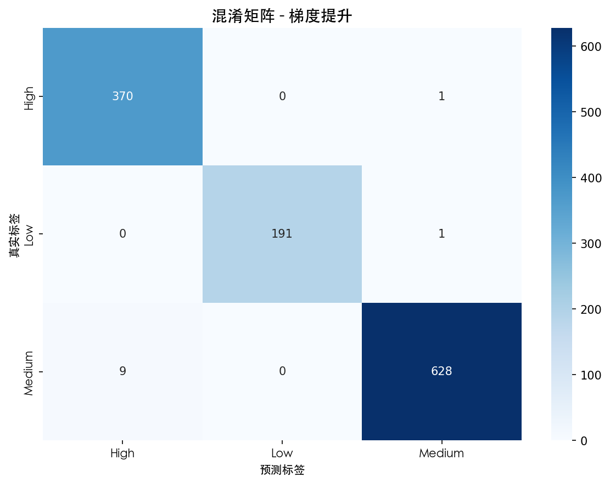
梯度提升分类器在三个类别上的预测准确率均超过98%，展现了优秀的分类能力。
正确预测高成瘾样本，极少误判
主体类别，预测准确率最高
关键识别目标，准确率超过99%
各模型的区分能力评估
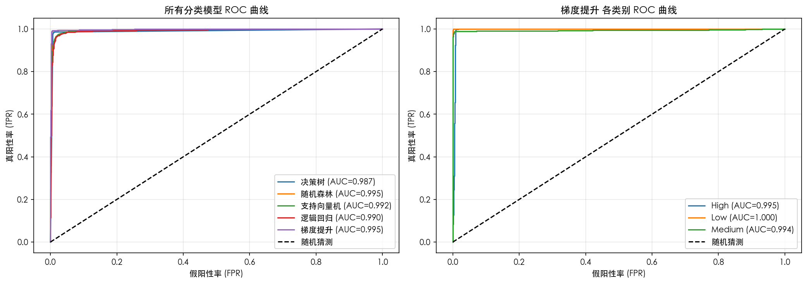
ROC曲线越靠近左上角，模型区分能力越强。AUC值接近1表示完美分类器。
AUC = 0.995
AUC = 0.995
AUC = 0.990
影响成瘾程度预测的关键因素
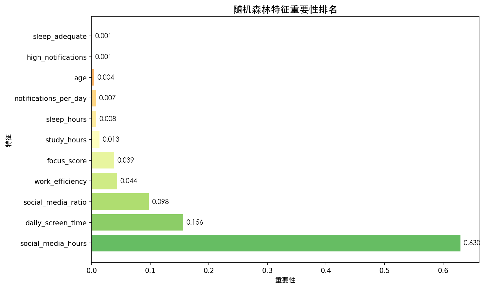
是预测成瘾程度最关键的因素，直接反映使用习惯
第二大影响因素，与社交媒体使用高度相关
反映社交媒体活跃度，也是重要的预测因子
与成瘾程度呈负相关，可作为辅助判断指标
研究发现与实践建议
每增加1小时社交媒体使用，生产力平均下降约5分
学习时间与生产力呈强正相关(r=0.54)
专注力得分与生产力相关性最高(r=0.59)
将每日社交媒体使用控制在2小时以内，避免超过4小时的"生产力悬崖"
使用番茄工作法，减少通知干扰，提升深度工作时间
每天保证4小时以上的专注学习时间，持续提升专业能力
定期自评成瘾程度，警惕从Medium向High的转化
MM5412 小组项目 - 社交媒体使用对生产力影响分析